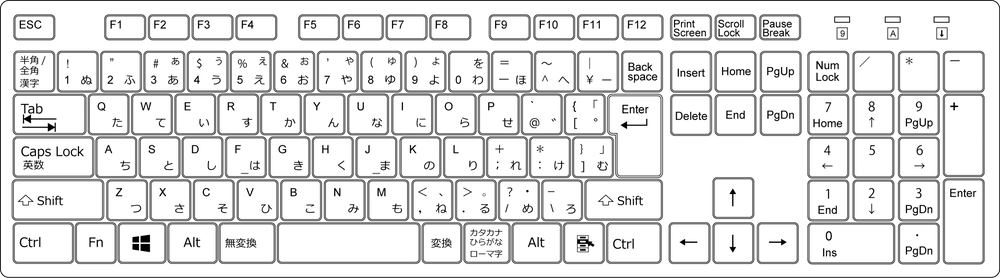

vimのショートカット一覧

Normal
- 0 行頭に移動
- a 挿入モード(カーソルの直後)
- b 前の単語の先頭に移動
- cw カーソルから後ろの単語を消し、挿入モードへ
- c$ 行末まで削除して挿入モード ※ Cと同じ
- [N]d ([N]行)切り取り
- dd 1行切り取り
- de 単語の削除(末尾の空白を含まない)
- dw 単語の削除(末尾の空白を含む)
- d$ 行末まで削除
- [N]e ([N]個)次の単語の末尾に移動
- f[word] カーソルがある行の右側に存在する[word]に移動
- gg ページ先頭へ移動
- gt 右のタブへ
- [N]gt [N]番目のタブへ
- gT 左のタブへ
- h ←
- I 挿入モード
- J ↓
- k ↑
- l →
- n 次を検索
- o 挿入モード(下に新しい行を追加)
- p 貼り付け
- q[a-z]…q マクロの開始と終了
- r 1文字の置換
- t %(対応する括弧に移動)
- u アンドゥ
- v 領域選択
- [N]w ([N]個)次の単語の先頭に移動
- x 1文字削除
- y ヤンク
- za 折りたたみの開け閉め
- zz カーソルがある行を画面中央にする
- - スイッチ
- . 直前の動作の繰り返し
- / 部分検索
- [N]@[a-z] ([N]回)マクロ[a-z]を実行
- /[word] [word]を検索
Shift
- A 挿入モード(行末から)
- C 挿入モード(行末まで削除して挿入モード)
- D 切り取り(カーソル位置から行末まで)
- F[word] カーソルがある行の左側に存在する[word]に移動
- G ページ末尾に移動
- H ^(空白を含まない行頭に移動)
- I 挿入モード(行頭から)
- [N]J ([N])段落下に移動
- [N]K ([N])段落上に移動
- L $(行末に移動)
- N 前を検索
- O 挿入モード(上に新しい行を追加)
- P 貼り付け(カーソル位置の直前)
- R 置換(上書き)モード
- V 行選択
- # カーソル位置にある単語を前方検索
- = オートインデント
- * カーソル位置にある単語を後方検索
- < インデントを左にずらす
- > インデントを右にずらす
Control
- インクリメント
- 1画面上にスクロール
- (ノーマルモードへ)
- 半画面下にスクロール
- 1画面下にスクロール
- Enter
- 単語補完
- リドゥ
- 半画面上にスクロール
- ウィンドウコマンド
- c 現在のウィンドウを閉じる
- k, j, h, l フォーカスを移動
- o 現在のウィンドウ以外を閉じる
- +, > バッファを縦・横に広げる
- -, < バッファを縦・横に狭める
- デクリメント
- 空白改行の挿入
- (ヴィジュアルモード)選択した行のコメントアウト